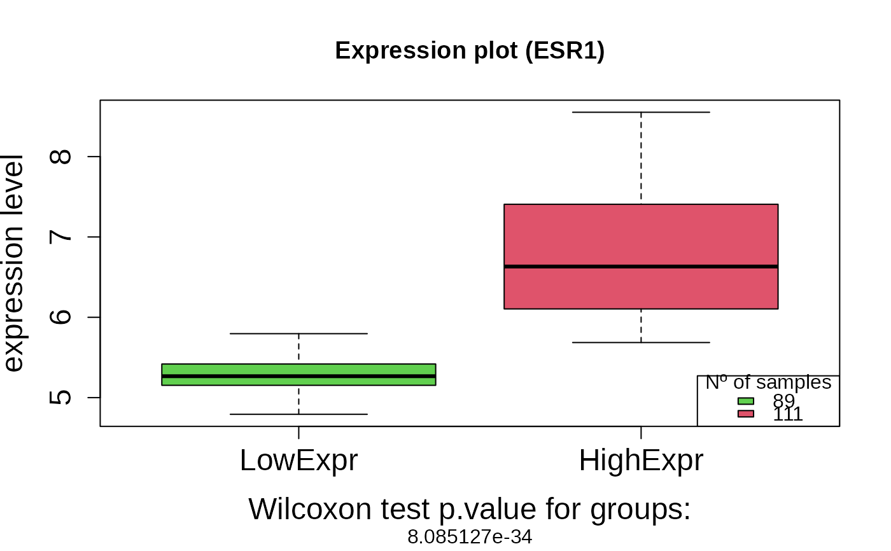
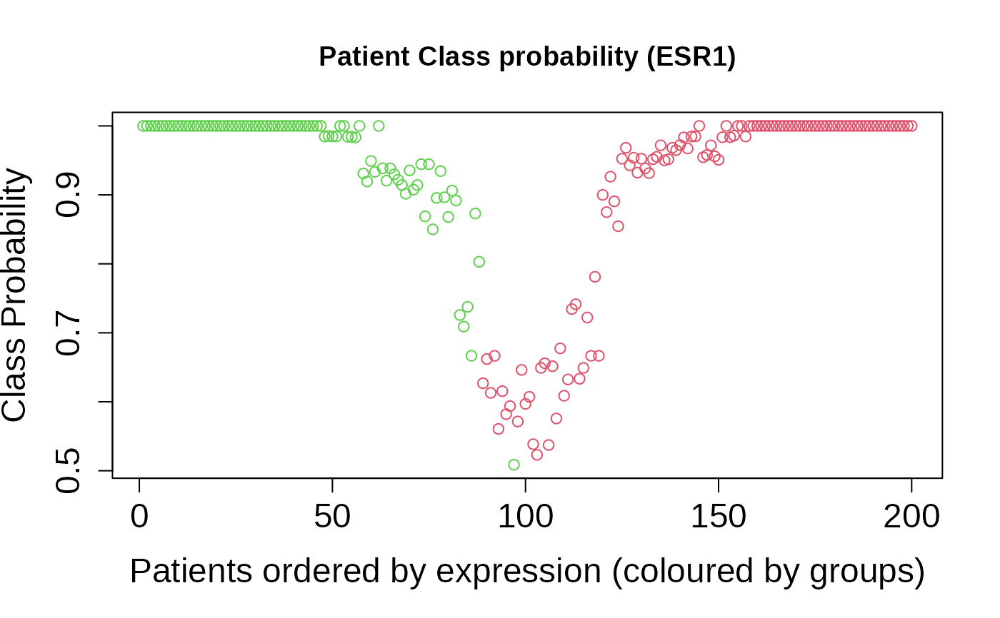
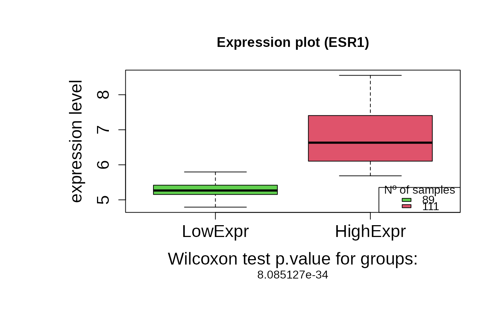
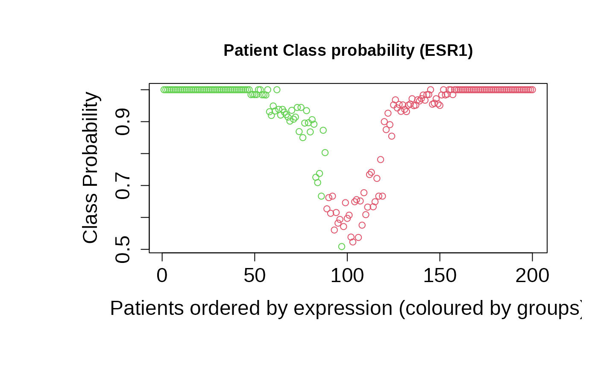
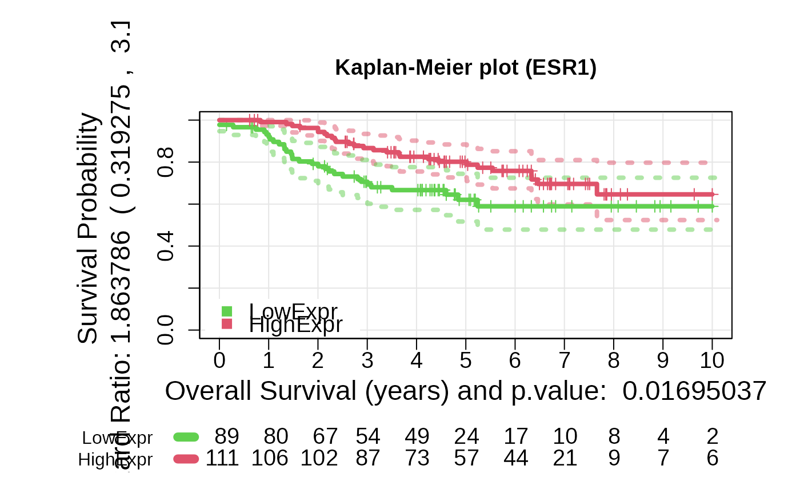
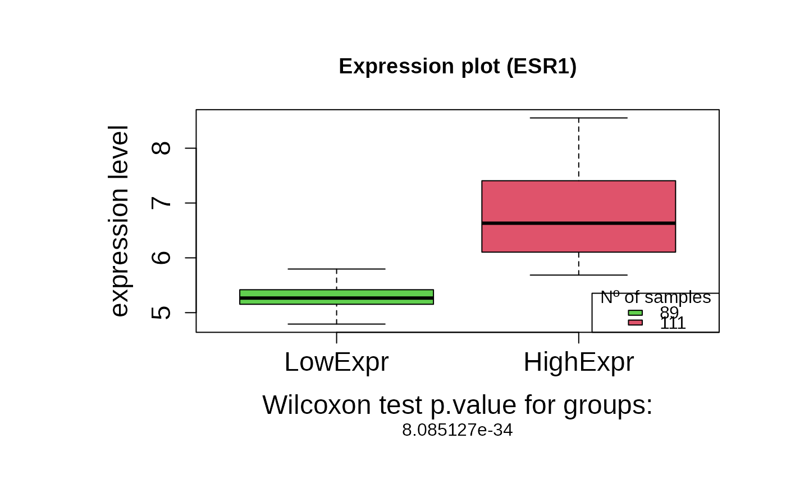
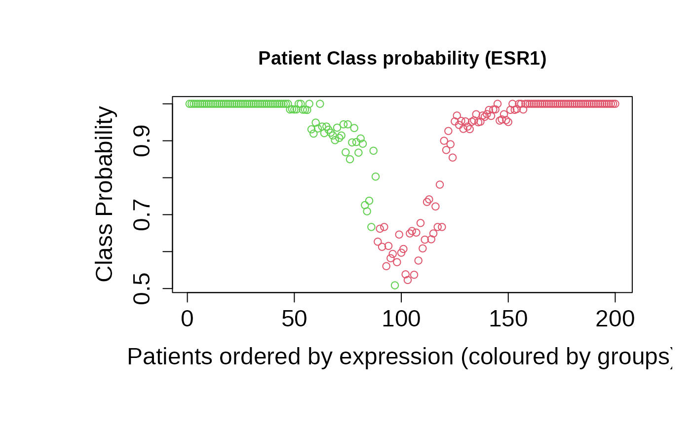
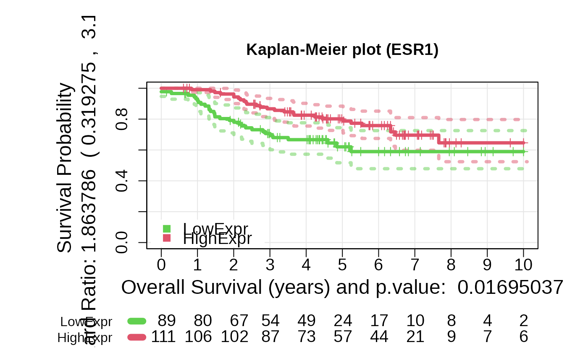

geneSurv
geneSurv.RdThis function analyzes the ability of a gene to mark survival based on a robust version of the KM curves. The robust K-M estimator is obtained by a bootstrap strategy.
Usage
geneSurv(genExpr, time, status, geneName, boxplot = T, iter = 100, type = c("exprs", "risk"), cut_time = 10)Arguments
- genExpr
Vector with the normalized gene expression for each sample. names(genExpr) should contains the sample names.
- time
Numeric vector containing the survival time for each sample in years, including the sample name in names(time).
- status
Numeric vector with the status (censored 0 and not censored 1) for each sample. names(status) shoud include the sample names.
- geneName
A character string with the name of the gene being analyzed.
- boxplot
A logical value indicating whether to generate a boxplot of gene expression by survival group (default = TRUE).
- iter
The number of iterations (bootstrap resampling) for calculating optimal group cutoffs (default = 100).
- type
Defines if the KM curve groups are computed using risk ("risk") or gene expression (default "exprs").
- cut_time
A numeric value specifying the cutoff time (in years) for survival analysis. All events beyond this time are treated as censored (default = 10 years).
Details
This function improves the stability and robustness of the K-M estimator using a bootstrap strategy. Patients are resampled with replacement giving rise to B replicates. The K-M estimator is obtained based on the replicates as well as the confidence intervals. The patients are stratified in two risk groups by an expression threshold that optimizes the log-rank statistics, that is the separability between the Kaplan-Meier curves for each group. This function implements a novel method to find the optimal threshold avoiding the problems of instability and unbalanced classes that suffer other implementations. Besides, a membership probability for each risk group is estimated from the classification of each sample in the replicates. This membership probability allow us to reclassify patients around the gene expression threshold in a more robust way. The function provides a robust estimation of the log-rank p-value and the Hazard ratio that allow us to evaluate the ability of a given gene to mark survival.
Value
Depending on the type run, the output changes.
- For "type = exprs":
A Kaplan-Meier plot based on expression groups, a differential expression boxplot and a plot with the membership probability for each risk group. Additionally, an object with the following components:
- geneName
A character string with the name of the gene being analyzed.
- patientExpr
The expression level of each patient for the given gene.
- patientClass
Vector of group classification according to the gene expression level: 2 = high expression and 1 = low expression level.
- patientClassProbality
Vector of membership probabilities for the classification.
- wilcox.pvalue
The p-value from the Wilcoxon test comparing the two expression groups.
- plot_values
A list containing Kaplan-Meier fit results, log-rank p-value, and hazard ratio.
- For "type = risk":
A Kaplan-Meier plot based on risk groups. Additionally, an object with the following components:
- geneName
A character string with the name of the gene being analyzed.
- patientExpr
The expression level of each patient for the given gene.
- risk_score_predicted
A numeric vector of predicted relative risk scores for each patient.
- plot_values
A list containing Kaplan-Meier fit results, log-rank p-value, and hazard ratio.
References
Martinez-Romero, J., Bueno-Fortes, S., Martín-Merino, M. et al. (2018) Survival marker genes of colorectal cancer derived from consistent transcriptomic profiling. BMC Genomics 19 (Suppl 8), 857 . doi:10.1186/s12864-018-5193-9
Santiago Bueno-Fortes, Alberto Berral-Gonzalez, José Manuel Sánchez-Santos, Manuel Martin-Merino, Javier De Las Rivas (2023) Identification of a gene expression signature associated with breast cancer survival and risk that improves clinical genomic platforms, Bioinformatics Advances, Volume 3, Issue 1, vbad037, doi:10.1093/bioadv/vbad037
Examples
data(geneSurvExprs)
genExpr <- mExprs[match("ESR1", rownames(mExprs)), ]
time <- mPheno$time
names(time) <- rownames(mPheno)
status <- mPheno$status
names(status) <- rownames(mPheno)
# The TIME value must be transformed to YEARS
# The gene expression vector must be provided with the NAMES of each sample,
# that should match the time and status NAMES.
set.seed(5)
outputKM <- geneSurv(genExpr, time, status, "ESR1", type = "exprs")
#> samples ok
#> 2025-04-24 12:26:18.361297
#>
Progress: 1 of 100
#>
Progress: 2 of 100
#>
Progress: 3 of 100
#>
Progress: 4 of 100
#>
Progress: 5 of 100
#>
Progress: 6 of 100
#>
Progress: 7 of 100
#>
Progress: 8 of 100
#>
Progress: 9 of 100
#>
Progress: 10 of 100
#>
Progress: 11 of 100
#>
Progress: 12 of 100
#>
Progress: 13 of 100
#>
Progress: 14 of 100
#>
Progress: 15 of 100
#>
Progress: 16 of 100
#>
Progress: 17 of 100
#>
Progress: 18 of 100
#>
Progress: 19 of 100
#>
Progress: 20 of 100
#>
Progress: 21 of 100
#>
Progress: 22 of 100
#>
Progress: 23 of 100
#>
Progress: 24 of 100
#>
Progress: 25 of 100
#>
Progress: 26 of 100
#>
Progress: 27 of 100
#>
Progress: 28 of 100
#>
Progress: 29 of 100
#>
Progress: 30 of 100
#>
Progress: 31 of 100
#>
Progress: 32 of 100
#>
Progress: 33 of 100
#>
Progress: 34 of 100
#>
Progress: 35 of 100
#>
Progress: 36 of 100
#>
Progress: 37 of 100
#>
Progress: 38 of 100
#>
Progress: 39 of 100
#>
Progress: 40 of 100
#>
Progress: 41 of 100
#>
Progress: 42 of 100
#>
Progress: 43 of 100
#>
Progress: 44 of 100
#>
Progress: 45 of 100
#>
Progress: 46 of 100
#>
Progress: 47 of 100
#>
Progress: 48 of 100
#>
Progress: 49 of 100
#>
Progress: 50 of 100
#>
Progress: 51 of 100
#>
Progress: 52 of 100
#>
Progress: 53 of 100
#>
Progress: 54 of 100
#>
Progress: 55 of 100
#>
Progress: 56 of 100
#>
Progress: 57 of 100
#>
Progress: 58 of 100
#>
Progress: 59 of 100
#>
Progress: 60 of 100
#>
Progress: 61 of 100
#>
Progress: 62 of 100
#>
Progress: 63 of 100
#>
Progress: 64 of 100
#>
Progress: 65 of 100
#>
Progress: 66 of 100
#>
Progress: 67 of 100
#>
Progress: 68 of 100
#>
Progress: 69 of 100
#>
Progress: 70 of 100
#>
Progress: 71 of 100
#>
Progress: 72 of 100
#>
Progress: 73 of 100
#>
Progress: 74 of 100
#>
Progress: 75 of 100
#>
Progress: 76 of 100
#>
Progress: 77 of 100
#>
Progress: 78 of 100
#>
Progress: 79 of 100
#>
Progress: 80 of 100
#>
Progress: 81 of 100
#>
Progress: 82 of 100
#>
Progress: 83 of 100
#>
Progress: 84 of 100
#>
Progress: 85 of 100
#>
Progress: 86 of 100
#>
Progress: 87 of 100
#>
Progress: 88 of 100
#>
Progress: 89 of 100
#>
Progress: 90 of 100
#>
Progress: 91 of 100
#>
Progress: 92 of 100
#>
Progress: 93 of 100
#>
Progress: 94 of 100
#>
Progress: 95 of 100
#>
Progress: 96 of 100
#>
Progress: 97 of 100
#>
Progress: 98 of 100
#>
Progress: 99 of 100
#>
Progress: 100 of 100
#> 200


 # Generate the plots again
## Plots for c(type = exprs)
asuri:::plotBoxplot(outputKM)

asuri:::plotProbClass(outputKM)

asuri:::plotKM(outputKM)

# If we instead consider to run the function as *type* = risk
data(geneSurvRisk)
genExpr <- mExprs[match("BRCA1", rownames(mExprs)), ]
time <- mPheno$time
names(time) <- rownames(mPheno)
status <- mPheno$status
names(status) <- rownames(mPheno)
set.seed(5)
outputKM.TP53 <- geneSurv(genExpr, time, status, "BRCA1", type = "risk")
# Generate the plots again
## Plots for c(type = exprs)
asuri:::plotBoxplot(outputKM)

asuri:::plotProbClass(outputKM)

asuri:::plotKM(outputKM)

# If we instead consider to run the function as *type* = risk
data(geneSurvRisk)
genExpr <- mExprs[match("BRCA1", rownames(mExprs)), ]
time <- mPheno$time
names(time) <- rownames(mPheno)
status <- mPheno$status
names(status) <- rownames(mPheno)
set.seed(5)
outputKM.TP53 <- geneSurv(genExpr, time, status, "BRCA1", type = "risk")
 ## Plots for c(type = risk)
asuri:::plotKM(outputKM)
## Plots for c(type = risk)
asuri:::plotKM(outputKM)